BioMerieux miniVIDAS Reader
Instrucțiuni transformate din documentul local Configure communication And Use.doc. Readerul primește rezultate exclusiv prin conexiune serială; miniVIDAS nu acceptă comunicare bidirecțională pentru lista de lucru.
1. Conexiune fizică
Folosește cablu serial mamă-mamă, cu firele 2-3, 3-2 și 5-5. În reader selectează portul serial al adaptorului sau calculatorului.
| Setare reader | Valoare |
|---|---|
analyzer.comm_type | serial |
transport-serial.port | Port local, de exemplu COM3 sau /dev/tty.usbserial-.... |
transport-serial.baud | 9600 |
transport-serial.data_bits | 8 |
transport-serial.parity | none |
transport-serial.stop_bits | 1 |
transport-serial.flow_control | custom |
2. Activare comunicație în miniVIDAS
- Din Main Menu deschide Utility Menu.
- Intră în Configuration Menu.
- Navighează la LIS User Options și bifează LIS Upload Enabled.
- Opțional, bifează LIS auto validation pentru transmitere automată la prima tipărire.
- Intră în LIS Interface Options pentru setările de mai jos.
3. LIS Interface Options
| Secțiune | Setare | Valoare |
|---|---|---|
| Communication Settings | Baud Rate | 9600 |
| Communication Settings | Parity | None |
| Communication Settings | Character Size | 8 |
| Timeouts and Limits | Timeout / Checksum Retry Limit / ENQ Retry Limit | 3 / 3 / 3 |
| Timeouts and Limits | Checksum Error Retry Interval / ENQ Retry Interval | 10 / 10 |
| Timeouts and Limits | InterRecord Delay / InterMessage Delay | 0 / 2 |
| Data Format | Misc Format | Nicio opțiune bifată, inclusiv Alternate Protocol și Send Dilution. |
| Data Format | Time Separator / Date Separator / Field Terminator | : / / / | |
4. Capturi din configurarea miniVIDAS
Capturile au fost preluate din pachetul local de configurare. Apasă pe o imagine pentru vizualizare la dimensiunea originală.
{kind=link}
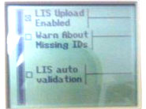
{kind=link}
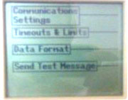
{kind=link}
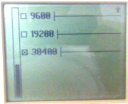
{kind=link}
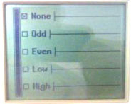
{kind=link}
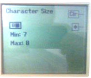
{kind=link}
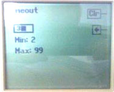
{kind=link}
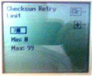
{kind=link}
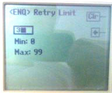
{kind=link}
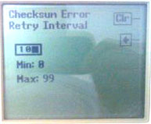
{kind=link}
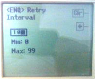
{kind=link}
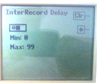
{kind=link}
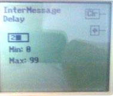
{kind=link}
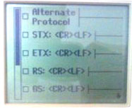
{kind=link}
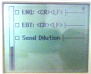
{kind=link}
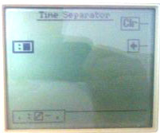
{kind=link}
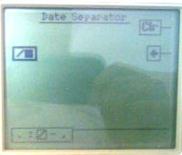
{kind=link}
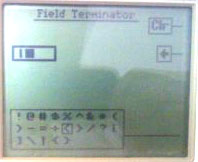
{kind=link}
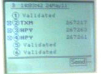
{kind=link}
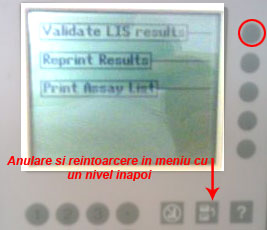
5. Trimitere și retrimitere rezultate
Pentru transmitere intră în Main Menu → Results Menu → Validate LIS Results, selectează rezultatele nevalidate și apasă Send. Dacă rezultatele au fost deja validate, retipărește-le din Results Menu pentru a reveni în lista de validare.
Dacă apar rezultate neselectate, răspunde în mod normal Nu la întrebarea de ștergere, pentru a putea face retransmiterea ulterior.
6. Ce preia readerul
Protocolul recunoaște ID-ul probei din ci, codul și numele testului din rt/rn, rezultatul numeric sau calitativ din qn/ql și data/ora din td/tt. La nivel de log 5, Logs afișează pachetul reconstruit ca PARSED SERIAL PACKAGE: TEXT: ....